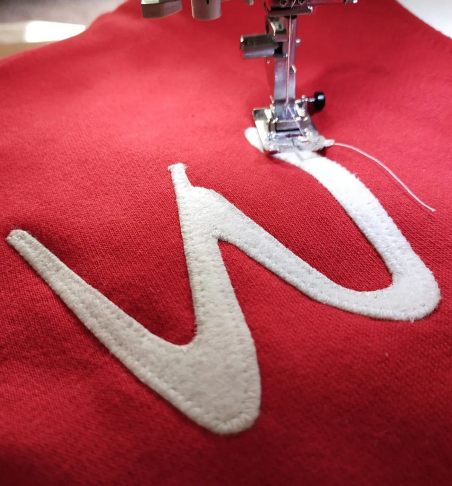
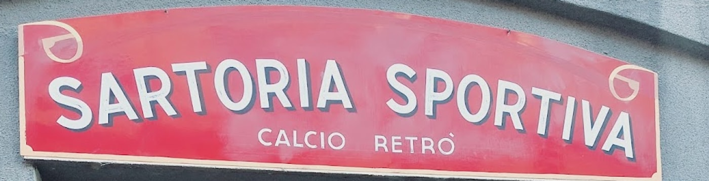

Bovisa, Milano · dal 2010
Sogni cuciti
a mano.
Non è uno slogan che abbiamo scritto noi: è quello che c'è sulla sua vetrina. Maglie da calcio vintage, cucite una per volta in Via Ciaia.

Il mestiere
Una maglia
non si stampa.
Le maglie che escono da qui non sono repliche prese da un catalogo: sono cucite a mano, una per volta. Le lettere e i numeri sono pezzi di panno applicati e ripassati a macchina, come si faceva quando le maglie duravano una carriera.
Nelle recensioni la parola che torna più spesso, dopo «calcio» e «maglie», è artigiano. Un cliente lo dice meglio: «una vera sartoria colma di chicche di tutti i tempi».
«Il grande Paolo mi ha realizzato un sogno… la mitica maglia del Monza, le patch fatte fare fuori. Un sarto speciale.»
Dario Di Stefano, recensione Google
Come si ordina
Basta la squadra
e più o meno l'anno.
Non serve essere esperti. Serve dire quale squadra e di che anni: al taglio, ai colori, allo stemma e al numero ci pensa lui.
«Ho ordinato qui un regalo per un appassionato di calcio, una maglietta della Sampdoria anni '90. Io non so assolutamente nulla di calcio e il Sig. Paolo è stato gentilissimo.»
Laura Podini, recensione Google
E si può anche uscire dal catalogo della storia: fra i suoi lavori ci sono maglie inventate e maglie celebrative, come quella per i duecento anni dell'indipendenza argentina.
Chiama la sartoriaLa bottega
Una stanza sola,
in Via Ciaia.
Pavimento alla veneziana, le maglie appese lungo le pareti, le fotografie d'epoca incorniciate e la macchina da cucire in mezzo alla stanza, sul tavolo di lavoro. Non c'è un retro: il laboratorio è il negozio.
Un cliente l'ha chiamata «meraviglia sportiva a Dergano». È a due passi dal campus del Politecnico di Bovisa.

Recensioni Google
4,8 su 41.
«Ho ordinato qui un regalo per un appassionato di calcio, una maglietta della Sampdoria anni '90. Io non so assolutamente nulla di calcio e il Sig. Paolo è stato gentilissimo.»
Laura Podini
«Meraviglia sportiva a Dergano, maglie fatte a mano di alta qualità. Con grande occhio al vintage: davvero una vera sartoria colma di chicche di tutti i tempi. Ideale per regali fuori dal comune.»
fabio ricci
«Il grande Paolo mi ha realizzato un sogno: la mitica maglia del Monza, le patch fatte fare fuori. Un sarto speciale.»
Dario Di Stefano
Dove siamo
Via Ciaia 6.
Via Ignazio Ciaia 620158 Milano — Bovisa
- lunedìchiuso
- martedì9:30–13 · 15–19:30
- mercoledì9:30–13 · 15–19:30
- giovedì9:30–13 · 15–19:30
- venerdì9:30–13 · 15–19:30
- sabato9:30–13 · 15–19:30
- domenicachiuso
Orari trascritti da quelli scritti a mano sulla vetrina. Su Google ne compaiono altri, aggiornati da terzi: se venite da fuori quartiere, una telefonata prima è la mossa giusta.
Domande
Non so niente di calcio: posso comunque ordinare un regalo?
Sì, e succede spesso. Basta sapere la squadra e più o meno gli anni: al resto — taglio, colori, stemma, numero — ci pensa Paolo.
Le maglie sono su misura?
Sono cucite a mano in bottega, una per volta. Anche i numeri e le toppe vengono applicati qui.
Si possono fare maglie che non esistono?
Sì: fra i suoi lavori ci sono maglie inventate e maglie celebrative, come quella per i duecento anni dell'indipendenza argentina.
Quando è aperto?
Da martedì a sabato, 9:30–13 e 15–19:30. Chiuso domenica e lunedì. Sono gli orari scritti sulla vetrina: una telefonata prima di fare strada resta la mossa più sicura.
Dove siete esattamente?
In Via Ignazio Ciaia 6, in Bovisa, a Milano.